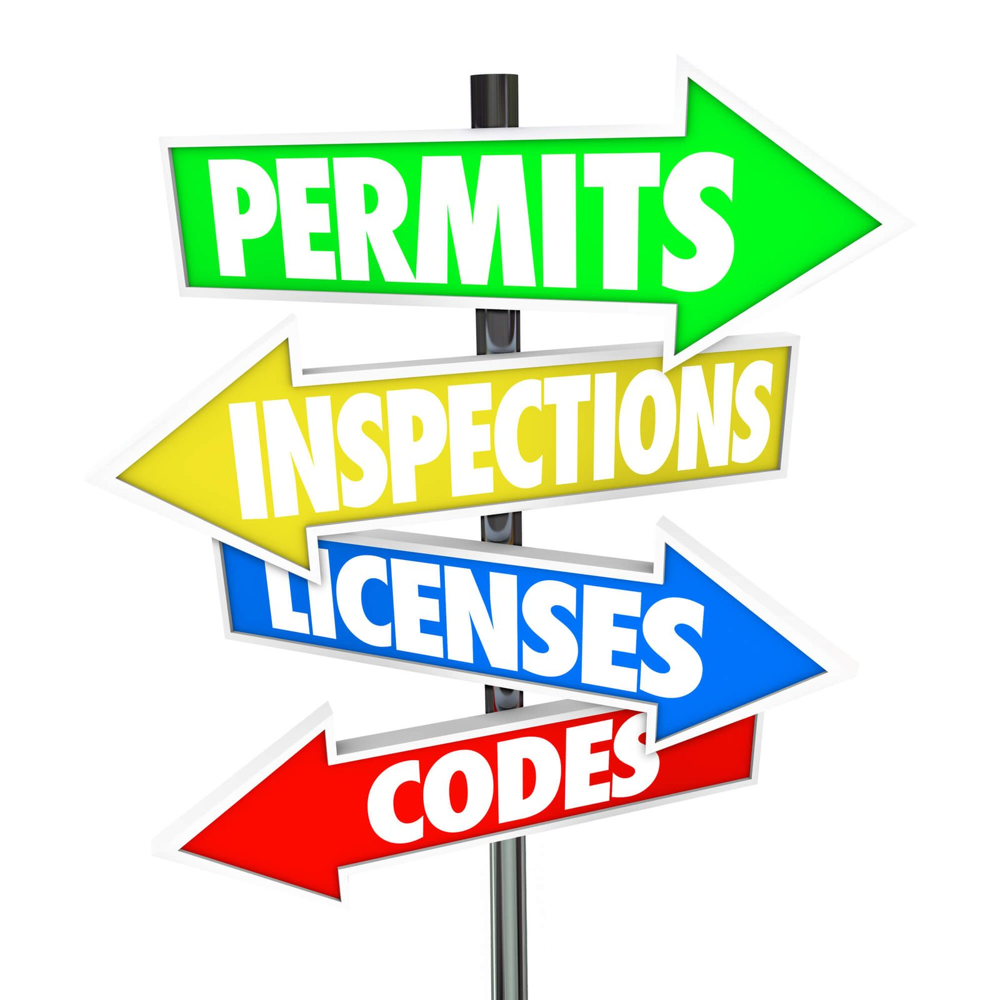

In This Guide
- Whether a fence needs a permit depends on the location, height, material, and type of project, so the honest answer is to check before any work starts.
- Start with your city or parish permitting office, then look at zoning rules, setbacks, your property survey, and any HOA or neighborhood covenants.
- Some neighborhoods may have extra review, so ask early, and call 811 before anyone digs so buried utility lines get marked.
- A short checklist and a list of questions for your contractor help you show up prepared and avoid delays after the fence is already ordered.
Before the first post goes in the ground, one question comes up for almost every homeowner: does this fence need a permit? The short answer is that it depends, and the rules that decide it can come from more than one place. This guide explains what to check, who to ask, and how to avoid surprises.
At Big Easy Fence, permit questions are some of the first ones we hear from homeowners in New Orleans and the surrounding area. We cannot tell you what your address requires, and neither can a website. What we can do is show you where the answer lives, so you get it from the source that actually decides.

Why the Answer Is Almost Always "It Depends"
A fence is a small structure, but it sits on a property line, near a street, and sometimes near a neighbor's living space. That is why local governments care about it. Rules can change with the height of the fence, the material, where it sits on the lot, and whether it faces the street or the back yard.
Two homes on the same block can have different answers. A corner lot, a lot next to a drainage area, or a home inside a neighborhood with its own covenants can each bring different requirements. So a friend's experience with a fence is a useful story, but it is not a permit answer for your yard.
A permit is not something to fear. It is a record that the fence meets local rules, and it can protect you if a neighbor or an inspector ever asks questions later.
Who to Ask About Fence Rules
Several offices and groups can have a say. It helps to contact each one rather than assuming one answer covers everything.
Your City or Parish Permitting Office
This is the first call. Depending on where you live, the office may be run by the city or by the parish. Ask whether a fence at your address needs a permit, what the application involves, and how long review usually takes. Ask, too, whether replacing an existing fence is treated differently from building a new one, since the answer may not be the same. If you are only fixing sections, our fence repair team can help you sort out what counts as repair and what counts as replacement.
Zoning Rules on Height and Placement
Zoning rules often address how tall a fence can be, how far it must sit from the street or sidewalk, and whether front-yard fences follow different limits than backyard fences. We do not quote specific limits here, because they vary and can change. Our guide on fence height regulations explains how to look up the numbers for your address.
HOA or Neighborhood Covenants
If you live in a subdivision or a community with an association, its rules may limit materials, colors, styles, or height, even if the city has no objection. Some associations ask for design approval before you build. Get that approval in writing rather than relying on a verbal go-ahead.
Historic Districts and Special Review
Some neighborhoods may have extra review, especially older areas with character to protect. If your home sits in a district like that, ask whether fence style, material, or color falls under review. It is a single question to the permitting office, and it can save weeks.
Know Your Property Lines Before You Build
Even a perfectly permitted fence causes trouble if it lands on the wrong side of the line. Rules about setbacks, meaning the distance a structure must sit from a boundary, are tied to where your lot actually ends.
Do not rely on an old fence, a row of shrubs, or a guess to mark the boundary. Those markers are often off by a little, and a little is enough to start a dispute. Find your property survey, which is often in your closing paperwork, and check it against the pins or markers on the ground. If the survey is missing or old, ask the permitting office or a licensed surveyor how to get a current one.
Also look for easements. A utility or drainage easement can limit what you may build in a strip of your own yard, and some are not obvious by looking.
Call 811 Before Anyone Digs
Fence posts mean holes, and holes can hit buried lines for gas, power, water, or communications. In the United States, you can call 811 a few days before digging so utility companies can mark where their lines run. The service is free, and it is meant to be done before the digging starts, not after.
Ask your contractor who makes the call and when. Either way, confirm that it happened before the crew arrives, since marked lines may need time to show up.
A quick conversation about where the fence will go, and which side faces whom, prevents most boundary friction. It also gives you a chance to share the schedule so nobody is surprised by the noise.
A Simple Pre-Installation Checklist
Once you know the rules, a few steps put you in good shape. Work through them in this order.
- Contact the permitting office. Ask whether your project needs a permit, and what documents they want.
- Check zoning and setbacks. Confirm height, placement, and any front-yard limits for your lot.
- Review HOA or covenant rules. Get written approval if the association requires it.
- Find your survey. Confirm where the property lines and any easements are.
- Pick a material and style. Choose one that fits both the rules and your goals. Our fence types page is a good place to compare options.
- Plan for 811. Confirm who is calling and when.
- Clear the work area. Move planters, bins, toys, and loose items away from the line.
- Talk to neighbors. Let them know what is coming and when.
Timing matters too. Permit review can take a while, and Louisiana weather affects scheduling, so it helps to start early. Our post on the best month for fence installation covers how the seasons play into it.
Questions for Your Fence Contractor
A good contractor will not be surprised by permit questions. Bring these to any company you are considering, and compare the answers.
- Who handles the permit? Ask whether the homeowner or the contractor files the application, and what that costs beyond the fence itself.
- What do you need from me? A survey, a site sketch, HOA approval, or a copy of the deed may all be requested.
- What happens if the review finds a problem? Ask how changes to the plan get handled and who pays.
- Will the fence be inspected? If so, ask who schedules it.
If you would like help with the paperwork, ask us whether we can assist with the permit process for your project. For a broader checklist on choosing a company, see our guide on what to look for in a New Orleans fence contractor.
Your Next Step
Here is the plan in one sentence: call the permitting office, check zoning and HOA rules against your survey, and make sure 811 is on the calendar. With those answers in hand, choosing a style and a schedule becomes much easier. When you are ready to price the work, reach out about residential fencing and we will walk through your yard with you and put together a free estimate.
Planning a Fence Project?
Tell us about your yard and what you want built, and we will talk through the next steps and give you a free estimate.